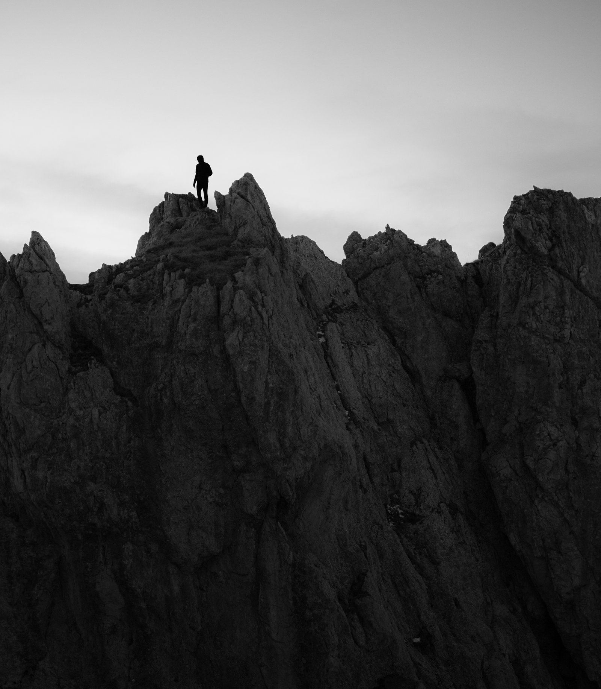
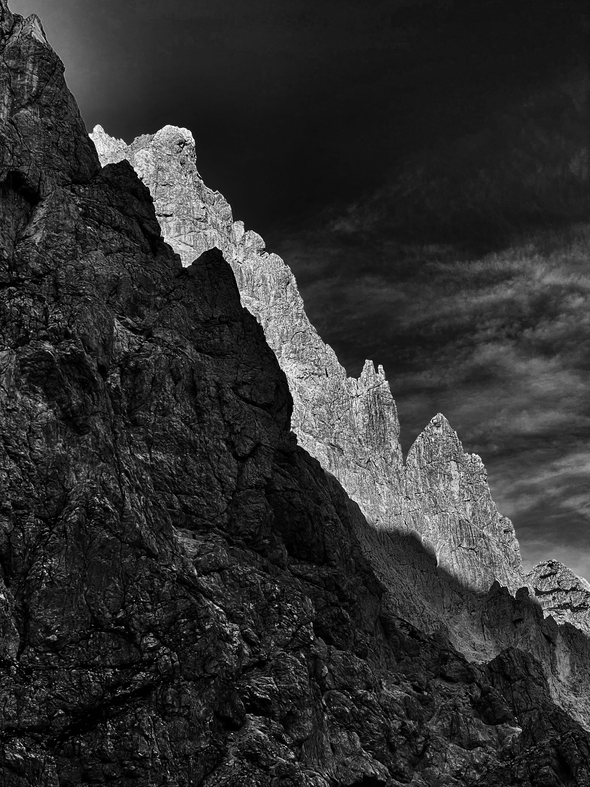

103 Mountain
Prilagojena gorska doživetja za zasebne goste.
Vodenje v gorah oblikujem premišljeno in osebno, z občutkom za varnost, usklajenost in kakovost celotnega dne.
Povprašaj o zasebnem gorskem doživetju
Pristop
Individualen pristop.
Dober dan v gorah se začne že precej pred izhodiščem. Začne se z načrtovanjem, jasnimi pričakovanji in izbiro poti, ki ustreza fizični pripravljenosti gosta, njegovim izkušnjam, samozavesti, željam in razlogu, zakaj si želi v gore.
103 Mountain je namenoma oseben in selektiven. To ni klasična vodniška ponudba, zgrajena okoli splošnih itinerarjev, vnaprej določenih paketov ali enega samega pogleda na to, kaj naj bi pomenil dan v gorah.
Varnost je vedno na prvem mestu. Dobre odločitve pa ustvarijo prostor za dan, ki je lahko bolj sproščen, bolj prisoten in bolj živ: z enakomernim gibanjem, dobrimi pogovori, tihimi trenutki, spreminjajočimi se razgledi in preprostim užitkom, da smo zares zunaj.
Kaj ponujam
Doživetja, zasnovana na dobri usklajenosti.
- Individualno vodena gorska doživetja za posameznike in manjše skupine
- Izbor poti glede na realne sposobnosti, ambicije in razmere
- Pristop, ki temelji na varnosti in presoji
- Gorsko doživetje, oblikovano s prisotnostjo in skrbjo
- Bolj oseben in pozoren vodniški pristop
- Doživetja, zasnovana okoli tempa in kakovosti, ne količine

Kako vodim
Pozornost, mirnost in odgovornost.
Cilj ni ljudi potisniti skozi generično izkušnjo, ampak ustvariti dan v gorah, ki je smiseln od začetka do konca.
To običajno pomeni dobro pripravo, iskreno komunikacijo, stabilen tempo in pripravljenost na prilagoditve, kadar to zahtevajo razmere ali ljudje. Izziv je del izkušnje, vendar mora biti pravi izziv.
Ozadje
Kilometrina v gorah.
- 30 let plezanja, alpinizma in gorništva
- Aktiven v gorah od leta 1995
- Inštruktor alpinizma in športnega plezanja
- Licenciran planinski vodnik
Za goste, ki si želijo gorskega doživetja, oblikovanega z občutkom za pravo mero, zanesljivo presojo in oseben standard skrbi.
Povprašaj o zasebnem gorskem doživetju